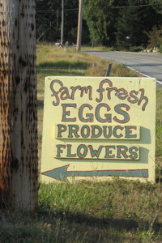
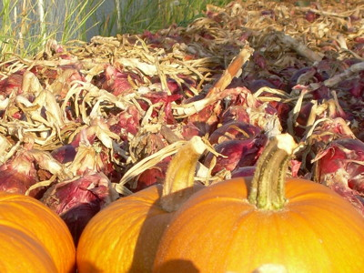

Produce


At Rosehip Farm and Garden we are committed to producing the highest quality vegetables, flowers, and eggs possible without the use of chemicals or artificial inputs of any kind. We believe Mother Nature does it best and we strive to mimic natural systems. We produce a diverse medley of crops mostly by hand, preferring to use ‘people power’ rather than petroleum.
We grow over 100 different crops focusing on heirloom varieties known for their flavor and beauty. We are particularly known for our Pea Shoots, Salad Mix, Tomatoes, Basil, Broccoli, Beans, Specialty crops, Garlic Braids, and Flowers.
How do you find us?
Join our CSA program – For the first choice in what is fresh on the farm sign up for a season of fabulous produce. See the CSA Farm Share Program page on this website.
Shop the Rosehip Farm Stand – located on-farm at 338 Fort Casey Road, Coupeville. Open daily from 9 am to 6 pm, April through November. Find seasonal produce, chicken and duck eggs, flowers, and more. We accept cash or check.
Visit the Coupeville Farmers Market – Find us most Saturdays at the Coupeville market from 10 am to 2 pm April through the 2nd Saturday of October. The market is in the field behind the library. We sell produce, flowers, plants and starts, and artisan bread from the Oystercatcher Restaurant. For more information on Coupeville Farmers Market.
Restaurants and Caterers – Find our produce at local restaurants including The Oystercatcher Restaurant in Coupeville, Frasers Gourmet Hideaway in Oak Harbor, and Serendipity Catering in Coupeville.
Farm-to-Table Dinners – Rosehip and the Oystercatcher Restaurant have teamed to create a very special dining experience with our Farm-to-Table dinners. Featuring produce from our farm, chef Tyler Hansen prepares amazing 5 course dinners with lovely wine pairings selected by his wife Sara. Enjoy cocktails and appetizers while wandering the gardens, then enjoy a memorable and unique on-farm dining experience. Our July 2015 dinner featured the best in summer fare. Contact us for information on the next scheduled dinner.
See also information about our Community Supported Agriculture (CSA) program and Cut Flowers for your special events.
{kind=link}